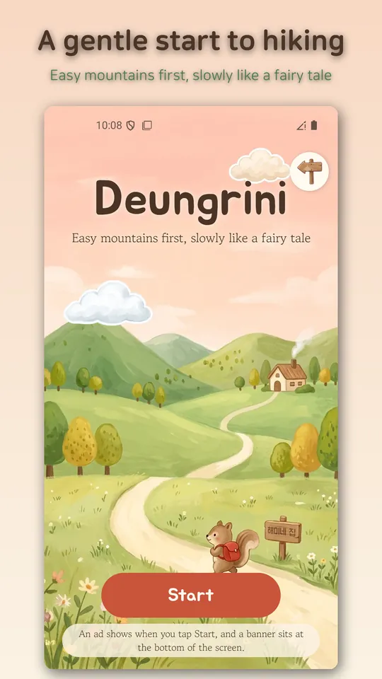
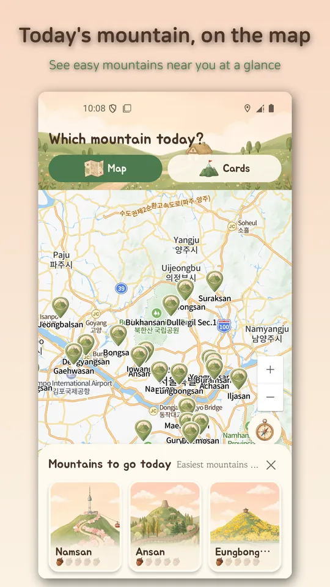
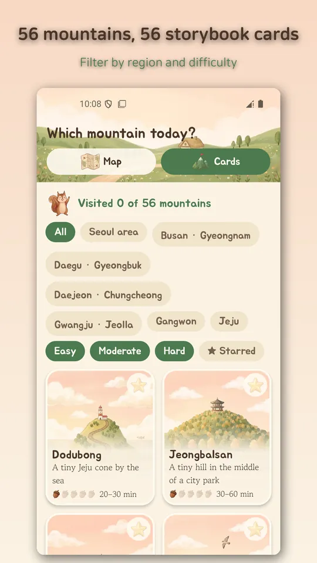
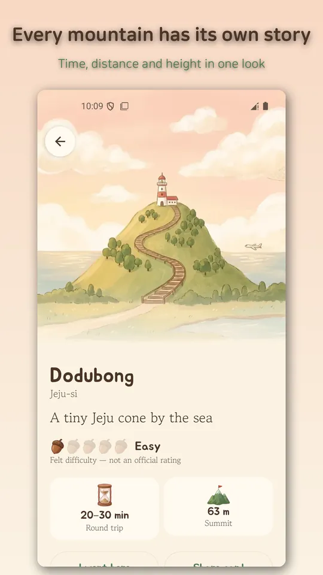
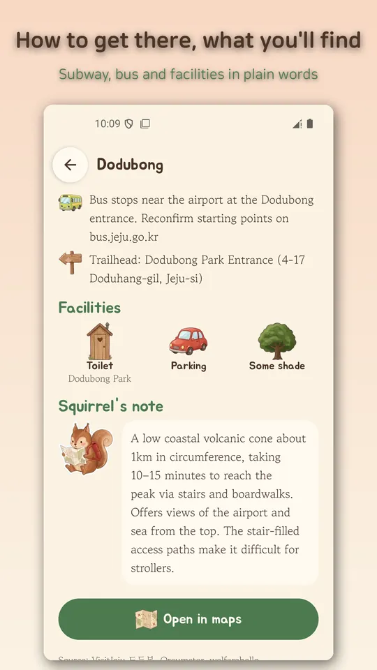

Easy Korea Hikes for Beginners
Storybook guide to 56 easy Korean mountains for first-time hikers, with map





About this app
Never hiked before and not sure where to start? Deungrini is a warm, storybook-style guide to 56 easy mountains across Korea, made for adults who are new to hiking. Each mountain has a hand-painted style card showing its real features, plus honest notes on time, distance and the hard parts of the trail.
Storybook cards for easy mountains
Every mountain gets its own card, such as N Seoul Tower on Namsan or the twin peaks of Maisan. 25 mountains are around Seoul, and 31 more are in Busan, Daegu, Daejeon, Gwangju, Gangwon and Jeju.
Three picks for today
Allow location and you will see the three nearest mountains. Skip it and you will see the three easiest. That is one less decision on a day you just want to go.
Find mountains on the Naver map
The home screen is a Naver map with a pin for each mountain. Location is requested only when you tap the my-location button. The card list can be filtered by region, difficulty and stars.
What each mountain page shows
- Round-trip time as a range, distance and summit height
- Felt difficulty shown as 1 to 5 acorns (not an official grade)
- How to get there by subway or bus, facilities, hard sections
- Notes for beginners and families
- Open the trail head in your map app
Keep track of your hikes
Tap "I went" to stamp a mountain and watch your count grow toward 56. Star the ones you like, and share a mountain card as an image with an install QR code.
Good to know
- No login, no sign-up
- No GPS track recording, no community, no in-app purchases
- Stars and stamps stay on your device
- 17 languages, including Korean and English
Please note
Times and difficulty are guides only and change with weather, season and your condition. Check current closures and the weather yourself before you go. The app contains Google AdMob ads (one interstitial when you press Start and a bottom banner).
📌 Sources (official government pages)
Mountain information is compiled from public sources. Please re-check transport and closures on the official sites below.
- Korea Forest Service: https://www.forest.go.kr
- Jeju Special Self-Governing Province bus information: https://bus.jeju.go.kr
📌 Disclaimer — not a government app
Deungrini is an unofficial reference app made by an individual developer (RealTunaLove). It is not affiliated with the Korea Forest Service, Korea National Park Service or any local government, and it does not represent any government agency.
Android · free with ads · Developer: RealTunaLove · Store listing in 17 languages